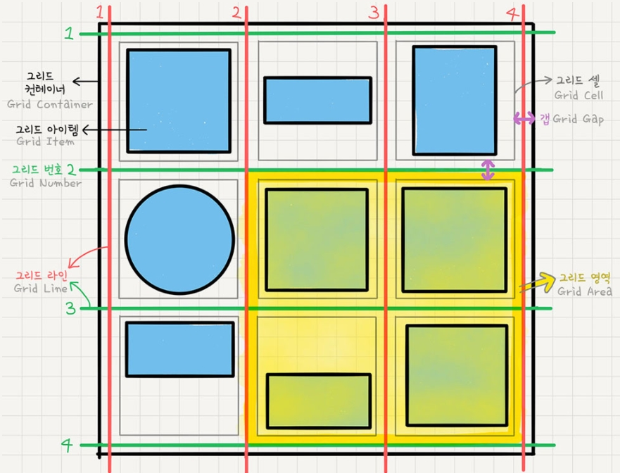

flex는 요소의 크기가 불분명하거나 동적인 경우에도
각 요소를 정렬할 수 있는 효율적인 방법을 제공한다.
플렉스는 2가지의 개념으로 나누어 지며,
첫번째는 container, 두번째는 items 이다.
container는 items를 감싸는 부모요소이며,
각 items를 정렬하기 위해서는 container가 필요하다.
주의할부분은 container와 item에 적용하는 속성이
구분되어 있다는 점 이다.
[container] : display / flex-flow / justify-content
[items] : order / flex /align-self
등을 사용할 수 있다.
display 속성으로 flex container를 정의할 수 있다.
flex - block 특성의 flex container를 설정,
inline-flex - inline 특성의 flex container를 설정
*items에는 영향을 주지않는다.
display 속성은container에만 인라인,블록 속성을 주는것임.*
flex items의 주 축을 설정하고 imtes의 여러줄 묶음도 설정한다.
[flex-direction] : items의 주 축을 설정
[flex-wrap] : items의 여러줄 묶음(줄바꿈) 설정
row값은 items를 수평축으로 표시하므로 주 축이 수평,수직
column은 items를 수직축으로 표시하므로 주 축이 수직, 수평
items의 여러 줄 묶음 (줄 바꿈) 을 설정합니다.
기본적으로 items는 한줄에서만 표시되고 줄바꿈 되지 않음.
하지만 flew-wrap옵션 사용시 지정된 크기(width,height)를 무시하고 한 줄 안에서만 가변합니다.
items를 줄 바꿈 하려면 wrap을 사용해야 함..
주 축의 정렬 방법을 설정합니다.
교차축의 정렬 방법을 설정.
위/아래 여백을 설정하는 옵션이기 떄문에 flex wrap을 사용하여
items가 2줄 이상이고 여백이 있을 경우에만 사용 가능.
order : flex item의 순서를 설정
flex : flex-grow, flex shrink, flex-basis의 단축 속성
flex-grow : flex item의 증가 너비 비율을 설정
flex-shrink : flex imtem의 감소 너비 비율을 설정
flex-basis : flex item의 (공간 배분 전) 기본 너비 설정
align-center: 교차 축(cross-axis)에서 item의 정렬 방법을 설정
css grid는 2차원 행과 열 의 레이아웃 시스템을
제공한다.

grid container:display:grid를 적용하는 grid의 전체영역
grid 컨테이너 안의 요소들이 grid 규칙이 영향을 받아 정렬된다고 생각하면 됨.
grid item:grid 컨테이너의 자식요소들.
grid track:행(row) 또는 열(column)
grid cell:grid의 한 칸을 가리키는 말임.
div와 같은 실제 html요소는 그리드아이템이고,
grid의 가상의 칸(틀?)임.
grid Line:grid셀을 구분하는 선
grid number:grid라인의 각 번호
grid gap:grid 셀 사이의 간격
grid areagrid라인으로 둘러쌓인 사각형 영역 / 그리드셀의 집합
grid container에 필수로 작성해야하는 옵션.
grid:block특성의 grid container를 정의
inrine-grid:inline 특성의 container를 정의함.
명시적 행(track) 의 크기를 정의함.
line의 이름도 정의할 수 있음.
fr:(fraction,공간 비율) 단위를 설정할 수 있음.
repeat() 함수를 사용할 수 있음.
사용방법은 grid-temokate-columns 와 같음.
repeat함수는 repeat(n,nnpx/%); 형식으로 사용
repeat함수는 2번째 인수를 반복함.
grid_template_columns:repeat(4,1fr,2fr,3fr) 으로 사용하면
1fr 2fr 3fr 1fr 2fr 3fr 1fr 2fr 3fr 1fr 2fr 3fr;
위와 같은 반복 가능
그리드 셀 사이의 간격을 설정
row-gap:10px - row 간격
column-gap:20px - column-gap 간격
ie에서는 gap의 대체 속성이 없음.